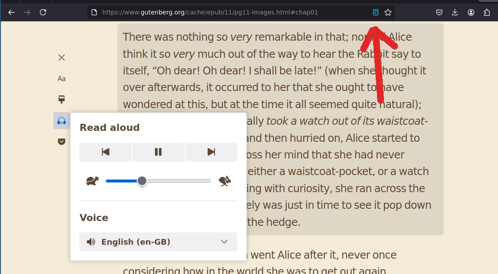
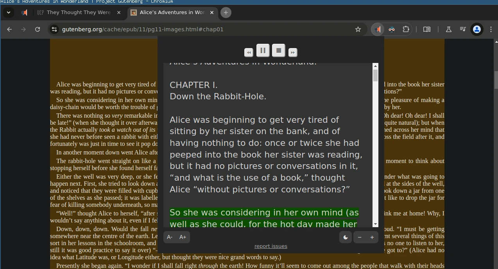

Một vấn đề khi đọc tiếng Anh là nhiều từ mình không biết đọc thế nào như các tên riêng, hay tưởng là có biết thì lại đọc sai, và không thể ngồi tra hết các từ đọc sao cho đúng được...
Không hiểu sao:
scholarnhìn qua bị đọc là "school-ar" (đúng là /ˈskɑː.lɚ/)insteadvì lý do lịch sử được học đọc là "in stid" (đúng là /ɪnˈsted/)- hay Nazi không đọc là Na-di mà là /ˈnɑːt.si/.
Các trình duyệt hiện đại ngày nay đều hỗ trợ sẵn tính năng đọc (text to speech - TTS) sử dụng engine của hệ điều hành.
Firefox reader view
Reader view là tính năng có sẵn của Firefox, bấm vào icon hình tờ giấy ở đuôi thanh địa chỉ để bật chế độ này (xem hình tại hướng dẫn trên trang chủ) . Sau khi chuyển sang reader mode, có thể chọn cho trình duyệt đọc nội dung, sử dụng TTS engine của hệ điều hành.

Hệ điều hành như MacOS hay Windows có giọng đọc đủ tốt. Với Linux (như Ubuntu), có thể cài thêm extension Read Aloud để có các giọng đọc chất lượng (bao gồm cả giọng GoogleTranslate), xem ở phần dưới.
Google Chrome
Google Chrome hỗ trợ gửi phần text được chọn đến "Service" > "Speech" (trên MacOS), nhưng cũng có thể cài extension Read Aloud để đọc.

Read Aloud extension
An awesome browser extension that reads aloud webpage content with one click
Open source https://github.com/ken107/read-aloud hỗ trợ cả 3 trình duyệt phổ biến Chrome Firefox Edge, được recomment bởi Mozilla https://addons.mozilla.org/en-GB/firefox/addon/read-aloud/.
note nhỏ: có vẻ như viết bởi tác giả người Việt ở Việt Nam.
Chú ý khi sử dụng các giọng đọc online, extension sẽ gửi nội dung tới các bên cung cấp giọng nói (như Google).
Mobile
Trên các thiết bị di động, giọng đọc xịn đều có sẵn và các trình duyệt đều hỗ trợ tính năng này.
Đổi giọng đọc trên MacOS/Iphone
Theo https://support.apple.com/en-gb/guide/mac-help/mchlp2290/15.0/mac/15.0
On your Mac, choose Apple menu > System Settings, then click Accessibility in the sidebar. (You may need to scroll down.) Click Spoken Content. Adjust the sound of the voice:
Trong System Settings, chọn Spoken Content rồi chọn giọng đọc mong muốn. Ví dụ giọng English (United Kingdom) > Serena (Premium).
Kết luận
Với tính năng giới thiệu trong bài này, tiếng Anh của bạn sẽ lên 1 level mới, level "như máy", AI 4.0.
Hết.
HVN at https://pymi.vn and https://www.familug.org.